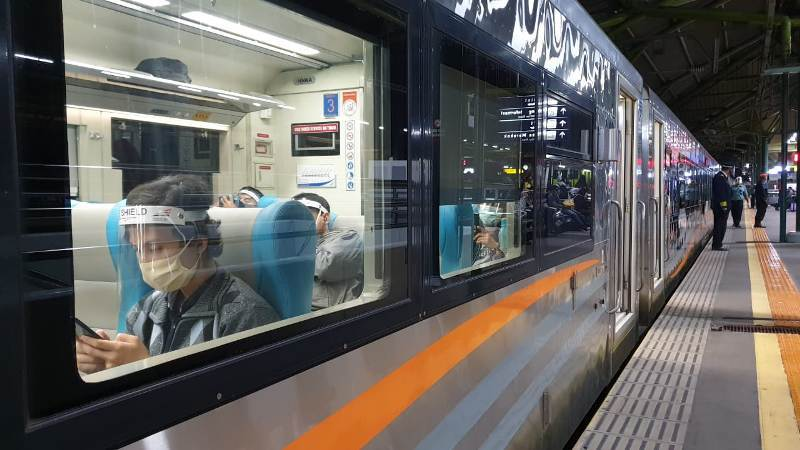

PT Kereta Api Indonesia (Persero) atau KAI menginformasikan bahwa mulai hari ini, Rabu (3/11/2021) syarat naik Kereta Api Jarak Jauh cukup menggunakan surat keterangan hasil negatif Rapid Test Antigen maksimal 1x24 jam sebelum keberangkatan.
VP Public Relations KAI Joni Martinus mengatakan aturan tersebut menyesuaikan dengan terbitnya SE Kementerian Perhubungan No. 97/2021 tentang Petunjuk Pelaksanaan Perjalanan Orang Dalam Negeri dengan Transportasi Perkeretaapian pada Masa Pandemi Covid-19 pada 2 November 2021.
“KAI senantiasa mengikuti dan mematuhi seluruh ketentuan dari pemerintah dalam rangka mencegah penyebaran Covid-19 pada moda transportasi kereta api,” kata Joni, Rabu (3/11/2021). Dia menyebut untuk membantu calon pelanggan melengkapi persyaratan tersebut, KAI telah menyediakan 71 stasiun yang melayani Rapid Test Antigen seharga Rp45.000.
"Selama 2021, KAI mencatat hingga 2 November telah melayani 1,6 juta peserta Rapid Test Antigen di stasiun," ujarnya. Lebih lanjut Joni menambahkan, jika ada pelanggan yang membawa hasil negatif tes RT-PCR untuk naik KA Jarak Jauh yang masih berlaku tetap akan diterima pada saat boarding.
Ini syarat lengkap naik kereta api:
- Pelanggan KA Jarak Jauh dan Lokal wajib menunjukkan kartu vaksin minimal vaksinasi Covid-19 dosis pertama. Kewajiban menunjukkan kartu vaksin dikecualikan bagi pelaku perjalanan dengan kepentingan khusus medis yang tidak/belum divaksin dengan alasan medis berdasarkan keterangan dari dokter spesialis dan pelaku perjalanan di bawah 12 tahun.
- Pelanggan KA Jarak Jauh wajib menunjukkan surat keterangan hasil negatif Rapid Test Antigen maksimal 1x24 jam sebelum jadwal keberangkatan.
- Bagi anak usia di bawah 12 tahun, wajib didampingi oleh orang tua/keluarga yang dibuktikan dengan Kartu Keluarga.
- Pemesanan tiket kereta api harus memasukkan Nomor Induk Kependudukan (NIK) pada kolom nomor identitas. Penggunaan NIK ini berlaku bagi pelanggan dewasa ataupun anak-anak untuk memvalidasi status vaksinasi dan pemeriksaan Covid-19 calon pelanggan. Hal tersebut dikarenakan, KAI telah mengintegrasikan aplikasi PeduliLindungi dengan sistem boarding KAI.
- Selama menggunakan layanan KAI, pelanggan wajib mematuhi protokol kesehatan yaitu memakai masker, mencuci tangan dengan sabun di air mengalir, menjaga jarak, menjauhi kerumunan, mengurangi mobilitas, menghindari makan bersama, dan menggunakan hand sanitizer.